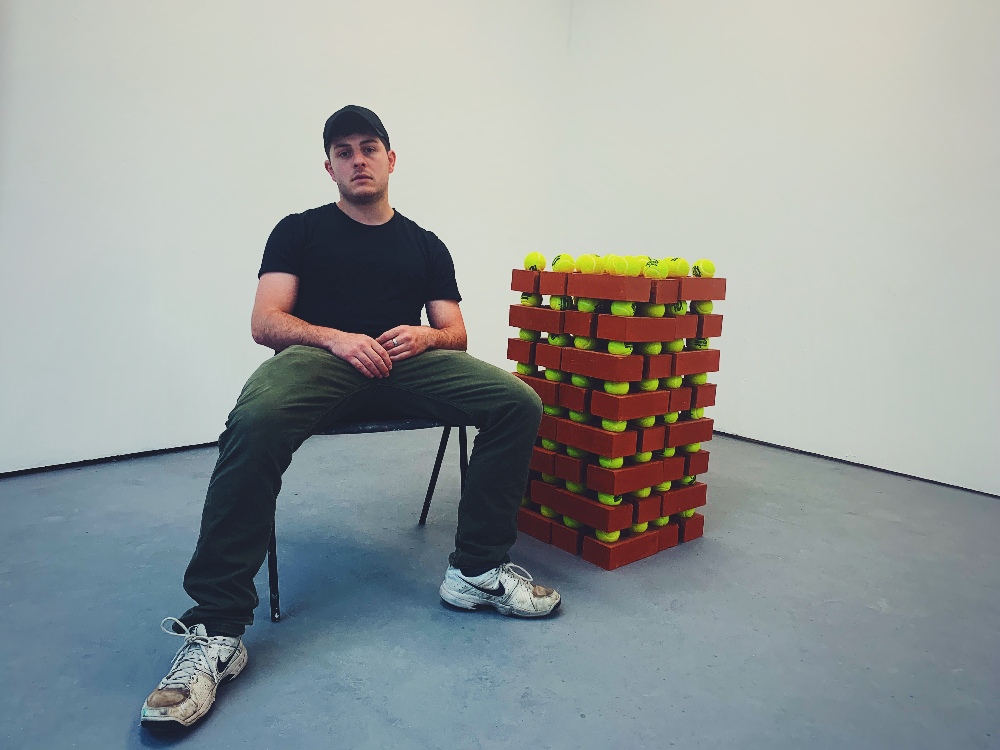

| Artists in charge
| Artists in chargeArtist of the week I
This week we have a spotlight on our artist of the week, Anthony H.
Why do you do what you do?
Sport and art have always ran parallel to one another in my life. For me, it’s all about the process of just doing. Both art and sport have those moments where you realise the potential of something and so through making I’m trying to come to terms with my own capacity to make. It is also about the capacity of my materials. With painting, video and sculpture, usually there is a limitation that I am trying to work within. How the work realised itself is a product of myself within that.
What is your unique approach to making art?
I’m focused on pushing the conceptual boundaries of my work further into the realm of the spectacle and the connection and disconnection this can make us feel. I’m really focused on further exploring my videos to make more short films and other video works that capture the same precarity as is in my paintings and sculpture show.
Visit curaty.co for the original post
Artist Q&A:
Virtual Studio Visit & Masterclass:
Artist of the week II
Curaty's featured artist of the week is Romicon R., an artist from Bangalore, India. Check out the incredible blog she put together to showcase her story.
What's your story?
I grew up in a family of artists so most of my childhood was filled with art-related activities. As a child, I remember being fascinated by monuments like the Egyptian pyramids, the Colosseum, the Eiffel Tower…my childhood dream was to grow up and build monuments that would stand the test of time and continue to exist in the world beyond my own lifetime. So I suppose that’s when the seeds of public art were sown, although I could not articulate it at the time.
When I began my journey as an artist in Bangalore there were very limited opportunities for public art but then the city started to develop at a rapid pace to become the Silicon Valley of India and suddenly I got more opportunities to work on outdoor sculptures in large scale. In a way, my art career evolved in parallel to the city’s IT-boom.
My favourite works from that period are Infinity, installed at a tech park and Urbanscape, installed at the Hilton hotel in Bangalore. Over the years I’ve installed around 20 outdoor sculptures at various campuses and public spaces in Bangalore.
In the process of bringing these massive projects to life, I started to evolve both as a person and as an artist. Having to work in concert with teams of people to bring your vision to life requires a completely different set of skills and developing those skills early on in my career has been a rewarding experience.
Simultaneously, I had to develop a sustainable model of working, generating revenue and creating an eco-system that would nurture my art practice. To do that I had to acquire another set of skills so I learned to think like an entrepreneur, keep the dream alive, and find a way around each and every challenge.
After working on large scale sculptures and site-specific installations for about 7-8 years my focus shifted to other mediums and subjects. I started making work in response to what was happening around me. There were major ecological challenges caused by unplanned urbanisation in Bangalore. We had lakes catching fire, water shortage, landfill management issues and every day was a battle against various forms of pollution. Around this time I became interested in juxtaposing man-made materials, especially plastic, with fragile, natural, bio-degradable materials. The Golden Bough and other stories from the Landfill is a series of sculptures and paintings made with found objects and biodegradable materials. I enjoyed making these ephemeral objects after having worked on large scale permanent installations for so long. I worked with tree trunks, turmeric, cotton, and natural fiber.
Shortly after that, I went back to working in metal and other permanent materials. However, there was a major shift in my visual language as seen in my present series Cosmic Bloom which consists of sculptures as well as videos. The Biosphere sculptures and the Trilokini busts are my most recent works from this series. I’m constantly challenging what I know and what I say.
What motivates you, or why do you do what you do?
The pursuit of truth, which is often hidden in the subconscious layer of human minds, has been the crux of all my artistic endeavors. In my art practice, spanning roughly 12 years, I have explored a diverse range of subjects from identity to sustainability and cosmology to consumption. My visual language has evolved through continuous exploration of materials and technologies. I’m a curious person by nature and this curiosity to understand and express the gamut of human experience is what drives me to create art.
What do you want your life to look like in 5 years, and what are you doing right now to get there?
In the future, I would definitely be showing more work internationally. Online platforms such as Curaty can erase geographical boundaries and bring my work closer to a global audience. I’ve started making digital art now and that kind of work can easily travel to various festivals and fairs around the world. Apart from that, I’m also interested in installing my large scale interactive public artworks at sculpture parks abroad.
It all starts with a vision and a plan and at the moment I’m in the process of understanding where my practice fits within the global art world and exploring how I can work in various context.
Visit curaty.co for the original post
Artist Q&A:
Virtual Studio Visit & Masterclass:
Artist of the week III
Curaty's featured artist of the week is Sofia 'Sophmetries'. She is a multi-disciplinary artist currently enrolled in the final year of MA Fine Art at UAL's Central Saint Martins. Check out this incredible blog she put together to share her story and journey as an artist.
What's your story?
"You own the party. You come here to have fun, make friends and look beautiful. You will receive generous tips by the male customers and there is strictly no sexual interaction”.
These were the terms of my first job, after applying to an eccentric, multicoloured, all caps Craiglist post advertising a job opportunity for young female students.I was 17 when the text message with time, place and dress-code invited me to confirm my participation to the event by replying yes, no or maybe. $2000 later my entire reality was irreversibly distorted, and specifically the understanding of possibilities in which I could capitalise on my body.
This went hand in hand with the wave of social media that influenced my generation. My self-awareness and sense of integration relied on an analytical validation system that rewards filtered beauty and a curated lifestyle of pleasure. It was clear to me that the key to unlock the stereotypically affluent virtual life, was indeed money.
Eventually, while broadcasting my New York privileged lifestyle, I started feeling trapped into a definition of desirability that hinged on unrealistic ideals. The failure to fully connect lead me to question my need to be outside the web and beyond the hyperawareness of my appearance.
As a result, my art practice is a self-reflexive project, to negotiate a space for the production of identity. My work responds with absolute transparency to narrative conventions, investigating the value of the female body in an hyperconnected and commodified society.
Through a combination of body art and media technology, my aim is to determine conclusions about how identity is converted into economic capital. Using my own body as an art object I allow myself to become the subject, and my personal experience with woman-hood is at its core.
What motivates you, or why do you do what you do?
In 1960 the french artist Yves Klein directed a performance where he arranged a group of naked woman making imprints of their body in front of a live audience. Although the work raised criticism for the way in which the artists instumentalised naked female models, what strikes me the most is how he distanced himself from its art production.
Anthropometries removed the artist from the direct making of the work and simultaneously extended the role of the female body. There, while the art making process unfolds directly in front of the audience, sexuality is at the core of this work (and perhaps its success).
Sexuality, emphasised by John Berger, was a crucial connotation carried over by the female body as represented in the average European oil paintings. He illustrates a passive and languid woman in a male dominated art history, and suggests that a naked body implies an awareness of being seen as an object in order to become a nude.
The feminist debate that followed throughout the end of 19th century, was a strong critical response to the sexual objectification surrounding women’s bodies in art history. Female artists started using their own bodies to reclaim subjectivity, and separate themselves from the gendered representation set by their male predecessors.
However, in modern frameworks, there is still an intense focus on women’s bodies. More specifically, in the artistic context and body art, there seems to be an element of inseparableness of the body from its sexual component. Where in the pre-feminist era, the representation of the female body was manipulated by male artists, in the contemporary media culture women become their own ‘sexual entrepreneurs'.
Drawing on the topic addressed, I felt the urge to experiment with my own body in art, to recreate the experience of proximity highlighted this study. Similarly to Anthropometries, I created a series of indexical marks with my body, which turned out to be a deeply intimate and personal experience. By re-contextualising this relationship of body, material and space, I analyse my work under two different circumstances: being a body and being a woman.
"As a woman, I am also a body - yet the role of proximity changes everything."
The interplay of proximity and mediation in my work, is set to explore the possibilities of reception between art and audience. Hence, social media might be the key aspect separating my work from the considerable influence of early feminist art.
Feminist body art of the 1970s, demonstrated how immediacy is at the core of developing a relationship with the audience. Their radical productions are characterised not only by their bodies, presented explicitly as sexual object, but also by the set of relations between audience and performer that evolve in the duration of the performance.
Social media is, after all, embedded in my culture. And only by provoking a reaction I can anticipate the future of sexual politics in art. My motivations are sparked by the desire to expose the contradictions of my generation, highlighting the problems of online communication, and the digital commodification of female bodies.
Is it possible that, in the era of networked protocols and love algorithms, the only way to authenticity is through a screen?
Visit curaty.co for the original post
Artist Q&A:
Virtual Studio Visit & Masterclass:
Artist of the week IV
Curaty's featured artist of the week is Zula R. Zula often works with digital and analogue photography, and incorporates archival images and documents to challenge conventional visual story-telling norms. Check out this incredible blog she put together to share her story and journey as an artist.
Why do you do what you do?
I was born in Poland, grew up in the UK and worked and studied in France, South Africa, China, India, Palestine and the French Caribbean. I studied English and French for my BA, which later led me to carry out research on postcolonial Caribbean identity and I moved to Martinique. After completing that project, I started to work as a financial analyst and later as an operations manager.
I had always done photography on the side, and there was a point where I decided to change the direction of my career and I started an MA in Documentary Photography and Photojournalism at LCC. This gave me the necessary theoretical and practical skills and enabled me to make invaluable connections with my peers and industry professionals to help me fulfil my goal.
I currently work as a commercial photographer, and work on long-term documentary projects, which focus on the themes of belonging, identity and the meaning of home.
Is there a movement that inspired you? Why do you create the work you make?
Most of my documentary work stems from strong feelings of frustration. My project which focuses on the Vietnamese diaspora in Warsaw was a response to the rising xenophobia in racism in Poland. The project before that, Citizens of Nowhere, was driven by my personal experience of immigrant life in the UK and through that I captured the feelings that underpinned my life after the Brexit referendum.
My most recent project was created in the vacuum of my flat and is a personal response to self-isolation. This is a work in progress and is the first time that I am working with self-portraiture.
Is there a movement that inspired you? Why do you create the work you make?
I would to carry on working as photographer, make valuable work and also start doing more teaching and working with students and others who are entering the industry. I also want to develop many of my practical skills, for example learning new methods of making images such as cyanotypes or anotytpes, which use light and are very different from digital photography.
I am really interested in the relationship between form and content, and I believe that having the knowledge of the myriad of ways that an image can be made, or constructed, will help me long-term. To nourish that I regularly look at work of other artists, not just photographers, but painters, sculptors, animators or even dancers or composers. I also regularly apply for grants and competitions to try to get my work to be seen by industry professionals.
Once Covid calms down, I hope that many of the photo festivals, like Arles, will resume and I would like to attend.
Visit curaty.co for the original post
Artist Q&A:
Virtual Studio Visit & Masterclass:
Artist of the week V
This last week of Curaty's campaign we have the pleasure to present to you a very colorful and multinational artist - Aasiri W.
What's your story?
My practice revolves around how I perceive different landscapes and spaces. I like to identify with them at an emotional level, where there is a historical significance or a personal experience, and interpret it in conceptual manner in my work. As a Sri Lankan born artist with a background in architectural studies, I draw inspirations both from my passion for architecture and travelling.
What is your unique approach to making art?
I have always been inspired by the traditional rock and wall paintings in Sri Lanka. It is very common for Buddhist temples in Sri Lanka to have paintings depicting scenes from Buddha’s 550 lives. Such scenes have been used for decorating walls of temples for centuries in Sri Lanka. These scenes are very detailed and consists of “ Pali” scripts, symbols along with the colourful drawings. Despite these paintings being from different time periods, various parts of the island and by multiple artists, they are coherent and come together to depict one story rather seamlessly.
I like to carry inspiration of story telling from the wall paintings in my work. The concept of different stories on its own in details as well as for it to work as one large work. I explore this in my work through using lots of different vanishing points, architectural and spatial details with mark making and a sense of ambiance through colour and layers. I try to identify the character of each place through my experiences and memories, then pick out distinctive qualities that contribute in highlighting the character of the place, and emphasise them in my paintings; so the final work tells a story.
What motivates you, or why do you do what you do?
I try to visit different countries every year with my family. If it is not overseas traveling, we still do lots of traveling locally. When I visit a place, instead of getting my sketch book out and making drawings, I spend the time exploring the place immersing in the culture, mingling with locals and taking pictures of things that I think are important. I like to collect all the little items on trips such as local newspapers, coins, and train tickets. It is much later that I go back to them and start reminiscing and sketching. It is more like a response to a nostalgic feeling, where I am able to recall an experience in my memory.
What do want your life to look like in 5 years and what are you doing to get there?
In five years I would like be a better story teller with my work. I am not exactly sure how I will do that. I think that uncertainty is also part of personal growth. The intention of producing solid work with originality is very important to me. This might not seem ambitious to many, but it is a very important aspect in the painting process for me. Personally I feel that is how I have grown so far. I have been very lucky with opportunities to exhibit my work, awards, and international clients. And they all came through genuine, honest thoughts and work I put in my work. Till date, each piece of work has been unique and I have been able to paint original thoughts and feelings in every piece I do. I hope I manage to do that every time in future.
Visit curaty.co for the original post